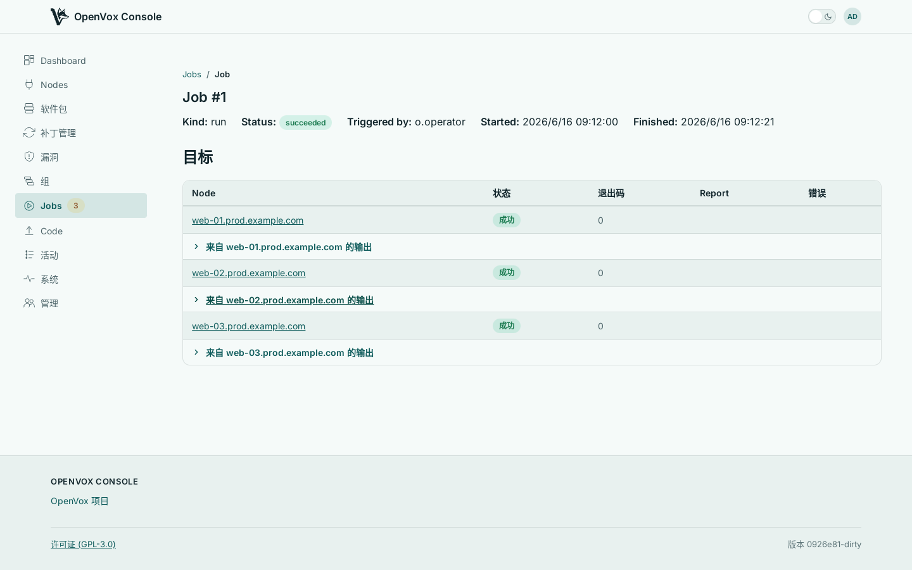

使用
运行 Jobs
在单个 Node、一组选中的 Nodes、查询匹配的 Nodes 或某个 Node 组上按需运行 Puppet 或 Puppet Task，并查看每个 Node 做了什么。
控制台可以立即在 Nodes 上运行 Puppet，而不必等待其下一次计划运行，还可以运行你已 deploy 的代码中包含的 Puppet Tasks。每个请求都是一个 Job，会记录它针对的每个 Node 以及每个 Node 上发生了什么。
启动 Job 需要 orchestrator:run；查看 Jobs 需要 orchestrator:read。Node 必须已连接才能被访问：参见添加 Nodes。
如果你的角色是在特定 Node 组上被授予的，你只能在这些组中的 Nodes 上启动 Jobs，而且只能看到它们的 Jobs。指定了组外 Node 的 Job 会被整体拒绝——其他 Nodes 上也不会运行任何东西——控制台会告诉你应排除哪些 Nodes。参见用户、角色与令牌。
要按顺序执行多次运行和多个 Tasks，参见运行 Plans。要稍后启动或重复启动 Job，参见计划 Jobs。
运行 Puppet
无论你在哪里查看想要操作的 Nodes：
- 单个 Node：在该 Node 的页面上运行 Puppet。
- 一组选中的 Nodes：在 Nodes 页面上选择 Nodes，然后对所选 Nodes 运行 Puppet。
- 某个组匹配的所有 Nodes：在该组的页面上，对其匹配的 Nodes 运行 Puppet。
每种方式都会打开一个列出这些 Nodes 的对话框。确认后即启动一个 Job，并带你进入该 Job。
或者从 Jobs 页面启动，在那里，运行 Puppet 和运行 Task 可以让你指定 Nodes：参见选择 Nodes。
运行选项
对话框提供三个选项。一个都不选时，就是一次普通的运行。
- No-op 会报告该次运行将要更改的内容，但不做任何更改。Job 会为每个 Node 显示该列表。
- 调试输出会为该 Job 中的每个 Node 记录 Puppet 的调试日志。
- Environment 让 Node 针对该 Environment 运行，用于在某个分支上试运行 Node。
Environment 只是一个请求，而不是强制覆盖。当某个 Node 的 Node 组设置了 Environment 时，无论运行请求的是什么，Puppet 都会使用该 Environment。在 Node 的 Report 到达后，Job 会标记出每个在与所请求的不同 Environment 中运行的 Node。
带选项的运行会记录 Puppet 打印的内容。在 Job 中某个 Node 的行下打开输出即可阅读。过长的输出会在 256 KB 处截断，并注明这一点。
运行选项需要来自此版本或更高版本控制台的 Node 代理客户端。较旧的客户端会拒绝该请求，该 Node 所在的行会失败，并说明客户端版本过旧。该 Node 上根本不会运行 Puppet，因此 No-op 请求永远不会被当作真实运行执行。请升级客户端——参见保持 Node 代理为最新——然后再次运行。不带选项的运行适用于所有客户端版本。
通过 API，使用访问令牌：
curl -X POST https://console.example.com/api/v1/orchestrator/runs \
-H "Authorization: Bearer <access token>" \
-H 'Content-Type: application/json' \
-d '{"targets":["web01.example.com","web02.example.com"]}'
对于带选项的运行，请添加 options。三项中的任何一项都可以省略：
-d '{"targets":["web01.example.com"],
"options":{"noop":true,"environment":"feature_x","debug":true}}'
如果 Environment 名称无效、openvoxserver 中不存在该 Environment，或者请求指定了控制台不认识的选项，请求就会被拒绝，并且不会创建 Job。
选择 Nodes
Jobs 页面上的运行 Puppet 和运行 Task 会询问要在哪些 Nodes 上运行，有以下三种方式：
-
Nodes 列表：certname，每行一个。
-
查询：一个返回
certname的 PQL 查询。控制台会在 Job 启动时针对 openvoxdb 运行它，Job 会在它返回的 Nodes 上运行：inventory[certname] { facts.os.family = "Debian" and facts.os.release.major = "12" } -
Node 组：Job 启动时该组中的 Nodes。
预览 Nodes 会显示你的选择此刻对应的 Nodes。对话框在启动任何东西之前总会先向你显示它们：第一次选择运行会执行预览，第二次才会启动 Job。不匹配任何 Node 的查询或组不会启动任何东西。
查询必须使用 PQL 自身的语法，并返回 certname。控制台或 openvoxdb 无法使用的查询会被拒绝并给出原因；如果是语法错误，给出的是 openvoxdb 自己的消息，会指出错误所在。
如果你的角色是在特定 Node 组上被授予的，查询或组只会给出位于你的组中的匹配 Nodes，并且不会透露任何其他 Nodes 的信息。你的查询也不能包含子查询（即一个实体的花括号嵌套在另一个实体中），因为这样的查询可能被用来探知你看不到的 Nodes。请像上面的示例那样只查询单个实体；inventory 可以访问一个 Node 的每个 Fact 和受信任 Fact。你在列表中指定的 Nodes 仍然是全有或全无。
通过 API 时，用 query 或 group（Node 组的 ID）代替 targets：
curl -X POST https://console.example.com/api/v1/orchestrator/runs \
-H "Authorization: Bearer <access token>" \
-H 'Content-Type: application/json' \
-d '{"query":"inventory[certname] { facts.os.family = \"Debian\" }",
"options":{"noop":true}}'
POST /api/v1/orchestrator/targets/resolve 接受相同的 targets、query 或 group，返回对应的 Nodes，但不启动任何东西。
运行 Task
Task 是随模块 tasks 目录一起提供的脚本，附带一个描述其参数的元数据文件。控制台运行你已 deploy 的代码中的 Tasks——参见 Deploy 代码——因此，除了 deploy 包含该 Task 的模块之外，无需为 Task 安装任何东西。
Tasks 出现在与 Puppet 运行相同的地方：Node 页面上的运行 Task、Nodes 页面上的选中项、组的匹配 Nodes，以及 Jobs 页面。在对话框中：
- 选择从哪个 Environment 中获取 Task。Tasks 读取自该 Environment 当前已 deploy 的代码。
- 选择 Task。其说明以及每个参数对应的字段会显示在下方。标有
*的字段为必填；留空的字段会采用其元数据中声明的默认值。 - 可选：设置超时。超时到达时仍在运行的 Task 会连同它启动的一切被一并停止，并报告为超时。除非另行指定，超时为 30 分钟，最长 55 分钟。
- 运行 Task 会启动 Job 并带你进入该 Job。
控制台会在启动任何东西之前依据 Task 的元数据检查参数，并在每个被拒绝的字段上标注原因。在参数正确之前，不会创建任何 Job。
角色可以被限制为只能运行部分 Tasks，此时 Task 列表只会提供你可以运行的 Tasks。无论你是从列表中选择还是通过 API 请求，你无权运行的 Task 都会被拒绝，返回 403 及其名称——参见将角色限制为部分 Tasks。
在 Task 元数据中被标记为 sensitive 的参数（密码、令牌）会在遮罩字段中输入。它的值只会发送给 Nodes，不会发往其他任何地方：Job 存储的参数、Job 页面、活动日志和审计日志都会显示 Sensitive [value redacted]。
通过 API，指定 Task、其参数，以及可选的 Environment 和以秒为单位的超时：
curl -X POST https://console.example.com/api/v1/orchestrator/tasks \
-H "Authorization: Bearer <access token>" \
-H 'Content-Type: application/json' \
-d '{"targets":["web01.example.com"],
"task":"service",
"params":{"action":"restart","name":"nginx"},
"environment":"production",
"timeoutSeconds":600}'
API 的检查方式相同：未知的 Task、缺失或多余的参数，或类型错误的值都会被拒绝并返回 400，其 fields 会指出每个问题。对话框背后的 Task 目录也可以通过 API 获取：GET /api/v1/tasks/environments、GET /api/v1/tasks?environment=production 以及 GET /api/v1/tasks/<module>/<task>?environment=production（模块自身的 Task 为 <module>/init）。
Node 会做什么
Node 的代理会使用自己的证书，从其自身 Puppet 代理所使用的 Puppet 服务器下载 Task 的文件，除非每个文件都与控制台查到的校验和一致，否则不会运行任何东西。它会保留已验证的文件，因此再次运行同一个 Task 时无需重新下载。
Task 的脚本是直接运行的，因此其第一行决定由什么来运行它（#!/bin/sh、#!/usr/bin/env python3）。Ruby Tasks 使用 Puppet 代理自带的 Ruby 运行；在 Windows 上，PowerShell Tasks 在 PowerShell 中运行。如果一个 Task 提供多种实现，Node 会选择适合自己的那一种。
Node 通过查询自己的 Puppet 配置来找到它的 Puppet 服务器。通过 DNS SRV 记录找到服务器的 Node 在配置中没有可读取的地址；请在其代理的环境中设置 NODE_AGENT_PUPPET_SERVER=puppet.example.com:8140。
Nodes 需要来自支持 Task 的控制台的代理。代理版本较旧的 Node 在执行每个 Task 时都会以 Error: Unknown subcommand 'task' 失败：请再次运行该 Node 的安装脚本以升级代理——参见添加 Nodes。
跟踪 Job
Jobs 页面列出所有 Jobs，最新的在前。Job 的页面把每个目标单独列为一行——其状态、退出码和输出——因此一个在九个 Nodes 上成功、在一个上失败的 Job 会如实显示。


如果某个 Job 还在你的 Node 组之外的 Nodes 上运行过，它的页面只会显示你的 Nodes，并注明这一点。该 Job 的总体状态仍然涵盖它运行过的每个 Node，因此即使你能看到的所有 Nodes 都成功了，它也可能显示为失败。
对于 Task，展开每个目标的行即可看到 Task 的结果：它打印的 JSON，或位于 _output 下的文本。当 Task 以非 0 值退出，或报告了 _error 时，Task 即为失败，其中的消息会显示为该行的错误。
在 Job 启动时未连接的 Node 会立即以 "agent not connected" 失败，而不会让 Job 一直挂起。
运行结束后，它所在的行会链接到该次运行产生的 Report，其中包含它更改的每个资源。
Jobs 列表和 Job 页面会显示运行的选项：No-op、所请求的 Environment，以及调试。
它们还会显示 Job 的 Nodes 来自哪里（当不是列表时）：查询或 Node 组。由计划启动的 Job 会注明该计划，并记录为由该计划的所有者触发。如果某个由查询启动的 Job 也在你的 Node 组之外的 Nodes 上运行过，你会看到自己的 Nodes，但看不到该查询。
每个 Job 的启动和结果也会记录在活动页面上。
一个 Plan 在列表中占一行。它的页面按顺序显示其步骤，每个步骤都有自己的状态和 Node 结果。
实例已停止的 Job
一个 Job 由启动它的控制台实例全程跟踪到结束。如果该实例在其目标完成之前停止，这个 Job 本会一直显示为运行中；实际上，一旦它的运行时间远超任何运行可能需要的时长，就会被标记为失败。